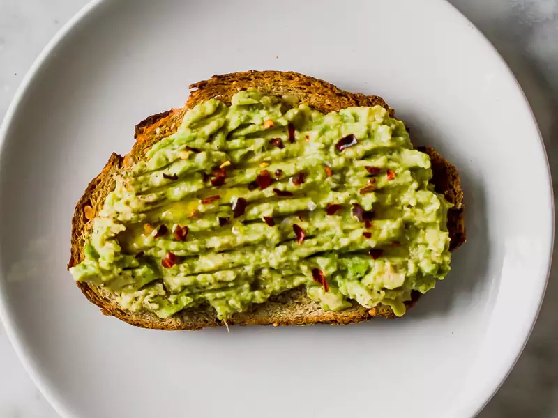

Avocado Toast

Smashed avocado on crusty sourdough bread with a little kick
A simple speedy breakfast with just a handful of ingredients. Our avocado toast uses crusty sourdough bread and a pinch of chilli for a kick.
Ingredients
- 1 ripe avocado
- 2 slices sourdough bread
- Chili flakes
- 1/2 lemon
- Extra virgin olive oil
Method
- Cut the avocado in half and carefully remove its stone, then scoop out the flesh into a bowl.
- Squeeze in the lemon juice then mash with a fork to your desired texture.
- Season to taste with sea salt, black pepper and chilli flakes.
- Toast your bread, drizzle over the oil then pile the avocado on top.
- Bon app!